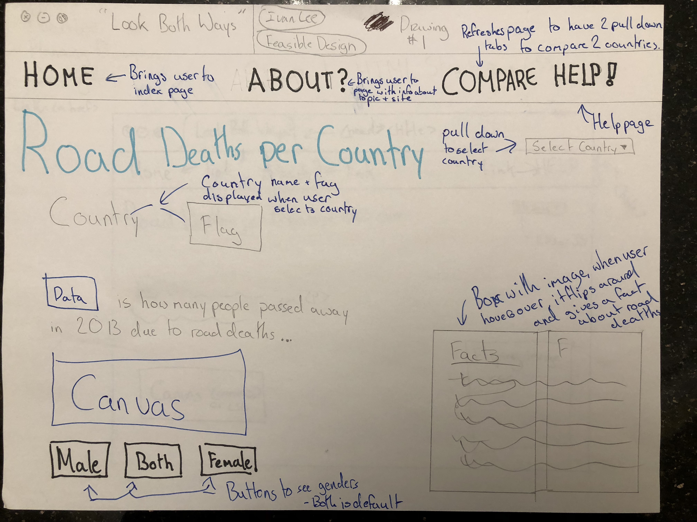
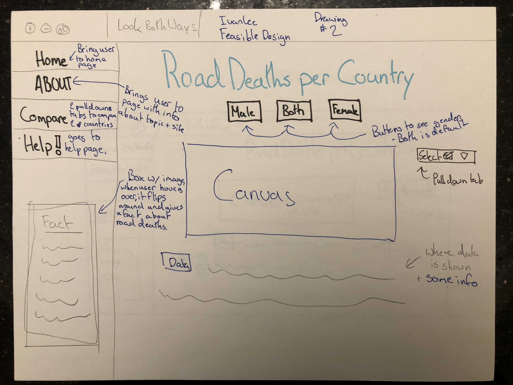

| Home |
The problem World Health Organization’s website is that it is not appealing and convenient for the user to maneuver through it. Since there is a lot of data, they only put the data without adding any other appealing functions. Making this website will have a more detail in the writing since it is focused on one topic and there will be extra functions like canvases to make it more appealing to the user and since it is one topic, what people are looking for is right away instead of going into different links to find the topic they are looking for. At the top of the website I am going to have a navigation bar with four buttons which are a home, about, compare, and help buttons. The home button will take the user back to the index page so go to other steps and progress on building the website. The about button will take the user to another page which has a couple of paragraphs that explains what the site and data is about, why I made it, and about the topic. The compare button will refresh the page or go to an alternate page that will have two pull down tabs to compare two different countries and their statistics. The help button will either be a pop-up or an alternate page and it will give some frequently asked questions and how to operate the site. Underneath the navigation bar, there is a title and a pull-down bar. For the pull-down bar, there will be every country listed in it for the user to chose. Under the title, the country and their flag will appear when the user selects a country. Underneath that is the data and a short message about it, and under that, there will be a canvas with an image. Below the canvas, there will be a button to change if the user would like to see either male or female data only. Underneath the pull-down, at the bottom right of the page, there will be an image and when the user hovers over it the box will flip around and give a fact about the topic. With these functions, it will make the website more appealing an interesting for the user and the project.
Design 1:
Design 2:
I wanted to make the website as convenient and clean looking for the user as possible whilst having many functions to make it interesting. The functions that I will put into the website were difficult but not too extravagant. There are a good amount but not too many because that will make the page more full which makes it not look appealing with all of them around and it will look messy and not proper. I chose to have a compare button because it was a neat function that was in some other classmate’s hockey pool application. It lets the user compare countries and see for research which countries have more or less road deaths. The flipping image was a neat idea that another teacher had in an example and I thought it would be good to have it and to put facts on it for the user to quickly see. Overall I will try to make the website have a lot of data, detail, and information while also having an organized, well structured, and appealing website.
Design 1 - HTML Structure + CSS
Design 2 - HTML Structure + CSS